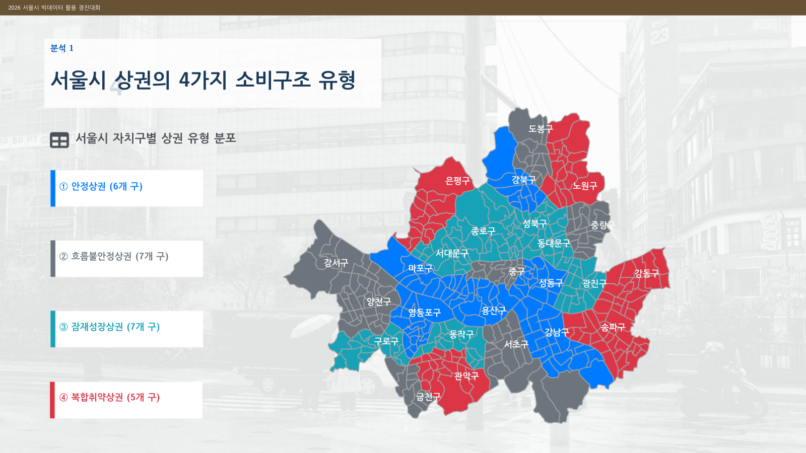

01 주제
서울시 25개 자치구의 유동인구와 카드소비 데이터를 결합해 유동인구가 소비로 충분히 전환되는지, 두 지표의 변화가 안정적으로 함께 움직이는지를 분석했습니다. 두 지표를 결합해 상권 유형을 구분하고 기상 요인에 따른 소비 변화를 정책 제안으로 연결했습니다.
유동인구가 많은 지역이라는 사실만으로 상권이 활발하다고 판단할 수 있는가? 유입이 실제 소비로 이어지는 구조를 어떻게 측정할 수 있는가?
02 분석 내용
생활인구가 많아도 소비가 기대 수준보다 낮거나, 유동인구가 증가해도 소비가 함께 증가하지 않는 지역이 존재한다는 문제에서 출발했습니다. 이를 확인하기 위해 소비전환 수준과 유동·소비 동조성을 별도 지표로 만들었습니다.
- 유동인구에 비해 실제 소비가 기대 수준보다 낮은 지역을 찾았습니다.
- 유동인구와 카드소비가 같은 방향으로 움직이는 정도를 확인했습니다.
- 두 지표를 결합해 안정, 잠재성장, 흐름불안정, 복합취약 상권으로 분류했습니다.
- 폭염, 한파, 강수 중 소비와 가장 큰 관련성을 보이는 기상 요인을 분석했습니다.
03 분석 방법
- STEP 1자치구·일 단위 데이터 통합
- STEP 2Residual과 Correlation 산출
- STEP 34개 상권 유형과 우선순위 도출
- STEP 4기상 패널모형과 정책 제안
데이터 구축과 전처리
KT 생활이동, 카드소비, 기상 자료를 결합하고 경제심리지수와 소비자물가지수를 통제변수로 사용했습니다. 행정동 자료를 자치구·일자별로 집계하고, 카드소비액과 유동인구를 로그 변환했습니다. 월별 추세를 제거하고 지역 유동인구와 직접 관련성이 낮은 온라인·정기 소비 업종은 제외했습니다.
소비전환 수준과 동조성
유동인구로 예측한 카드소비액과 실제 카드소비액의 차이인 잔차로 소비전환 수준을 측정했습니다. 잔차가 작을수록 유동인구가 실제 소비로 충분히 이어지지 않는 지역으로 해석했습니다. 자치구별 유동인구와 소비 변화의 상관계수로 동조성을 측정했습니다.
자치구별 평균 잔차의 중앙값 -0.1과 상관계수 중앙값 0.09를 기준으로 두 지표를 높음과 낮음으로 나눴습니다. 취약도는 잔차와 상관계수의 방향을 바꾼 뒤 표준화해 합산한 Priority Score로 계산했습니다.
기상 요인 분석
월별 추세를 제거한 카드소비액을 종속변수로 두고 폭염, 한파, 강수, 유동인구를 핵심 변수로 포함했습니다. 자치구, 월, 요일 고정효과를 반영해 지역과 시점의 차이를 통제했습니다.
04 분석 결과
상권 유형과 정책 우선지역
| 상권 유형 | 자치구 수 | 평균 잔차 | 평균 상관계수 | 평균 Priority |
|---|---|---|---|---|
| 복합취약상권 | 5개 | -0.18 | -0.01 | 1.41 |
| 잠재성장상권 | 7개 | -0.23 | 0.25 | 0.30 |
| 흐름불안정상권 | 7개 | 0.25 | -0.02 | -0.14 |
| 안정상권 | 6개 | 0.12 | 0.31 | -1.36 |
복합취약상권은 소비전환 수준과 동조성이 모두 낮아 평균 Priority Score가 가장 높았습니다. 강동구, 노원구, 성북구, 은평구, 관악구가 종합 취약도 기준 상위 5개 정책 우선지역으로 나타났습니다.

기상 요인과 소비
강수의 계수는 -0.053으로 소비와 가장 큰 음의 관련성을 보였고 통계적으로 매우 유의했습니다. 폭염은 소비가 약 1.7% 증가하는 방향으로 나타났으며, 한파의 감소 경향은 통계적으로 유의하지 않았습니다.
유형별 제안
- 안정상권: 보행환경 관리와 우천 시 접근·운영 정보 제공
- 흐름불안정상권: 역, 업무지구, 주거지와 상권을 연결하는 소비 동선 개선
- 잠재성장상권: 체류공간 확대와 지역상점 쿠폰·실내매장 연계
- 복합취약상권: 아케이드와 공공우산 등 보행 기반 보완, 생활소비 거점 강화
05 내 기여도
유동인구 규모를 비교하는 방식에서 벗어나 유입이 실제 소비로 전환되는 정도와 두 지표의 동조성을 따로 측정하는 분석 방향을 설정했습니다. 생활이동, 카드소비, 기상, 경제지표를 자치구별 일 단위로 결합하고 로그 변환과 추세 제거를 포함한 전처리에 참여했습니다.
잔차 기반 소비전환 지표와 상관계수 기반 동조성 지표를 구성하고, 두 지표를 결합해 상권을 네 유형으로 분류했습니다. 취약도 표준화를 통해 Priority Score를 산출하고, 패널모형 결과에서 강수의 영향을 확인해 상권 유형별 대응 전략으로 연결했습니다. QGIS 공간 시각화와 결과표, 발표자료 구성에도 참여했습니다.
06 프로젝트 자료
발표자료와 분석요약서, 전체 분석 코드를 내려받을 수 있습니다.